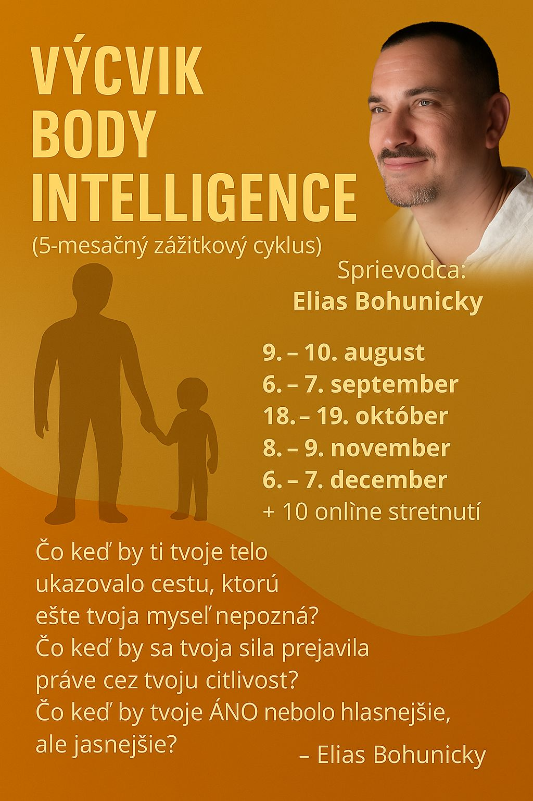
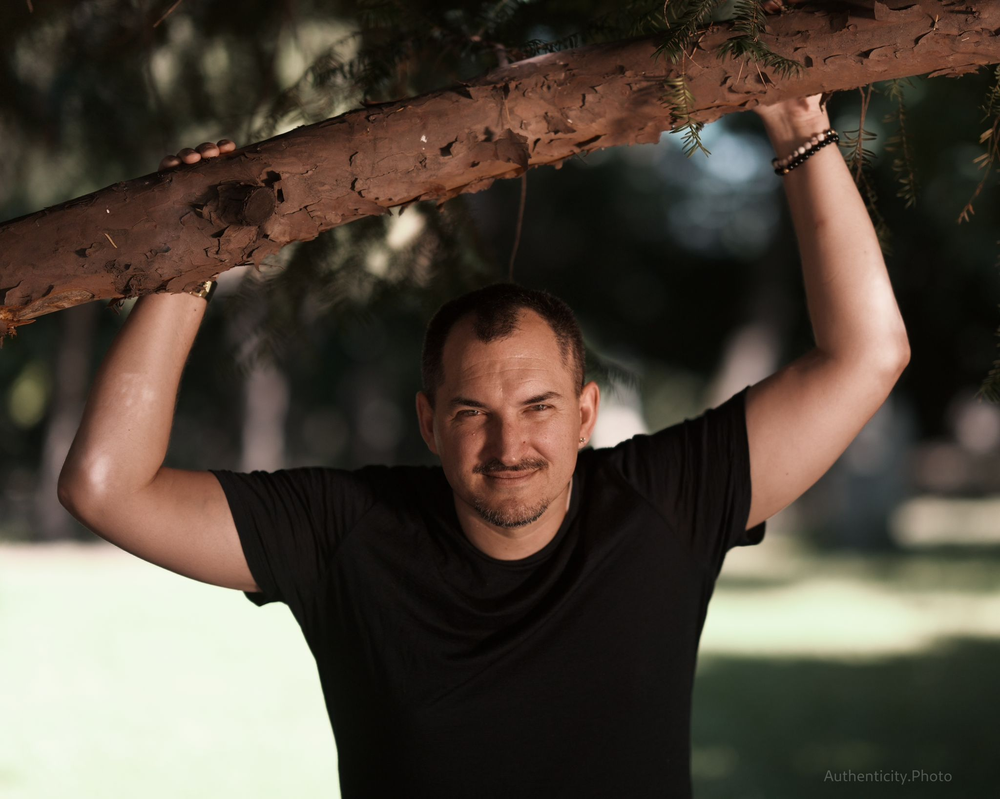

5-mesačný zážitkový cyklus
 Sprievodca: Elias BohunickýMiesto: Dojo, Poľná 1, Bratislava
Formát: 5 víkendových stretnutí + 10 online stretnutí (90 minút)
Začiatok: August 2025
Upozornenie:
Skupina je iba pre 12 účastníkov/čok. Pracujem v menších skupinách, aby mal každý človek dostatok priestoru na osobnú prácu so mnou.
🔹 O výcviku
Body Intelligence je 5-mesačný výcvik, ktorý ti pomôže rozvinúť inteligenciu vlastného tela – jemnú i silnú, inštinktívnu i vedomú. Povedie ťa k znovuobjaveniu tvojej prirodzenej múdrosti, odvahy, pravdivosti a schopnosti vnímať, kde je tvoje “áno” a tvoje “nie”.Zmyslom výcviku je obnoviť kontakt s telom ako múdrym sprievodcom v každodenných rozhodnutiach – v práci, vo vzťahoch, v intímnom živote aj vo chvíľach zmeny, neistoty a bolesti. Telo ako kompas, ktorý vie viac než myseľ.
🔹 Pre koho je výcvik určený
• pre tých, ktorí chcú lepšie porozumieť svojmu telu a jeho signálom• pre terapeutov, koučov, facilitátorov a sprievodcov, ktorí chcú pracovať hlbšie
• pre ľudí v transformačnom období
• pre páry aj jednotlivcov
• pre ženy i mužov, ktorí cítia, že niečo sa má zmeniť – ale ešte nevedia presne čo
🔹 Čo ti výcvik prinesie
• schopnosť vnímať jemné aj silné signály tela ako navigáciu• zvedomenie a posilnenie hraníc, kapacít a potrieb
• praktické nástroje pre vedomý dotyk, pohyb, komunikáciu
• nové porozumenie emóciám, symptómom a vzťahovým dynamikám
• odvahu byť pravdivý/á a nasledovať svoju životnú silu
🧲 Do výcviku sa bude robiť nábor, s každým záujemcom a s každou záujemkyňou, budem mať krátky video call
Prečo?Aby sme si boli obaja istí, že je to to pravé pre vás i pre skupinu.
Mojou úlohou je mimo iné aj chrániť energiu skupiny. To je dobrá správa pre všetkých, ktorý pravdivo chcú a môžu, že si môžete byť istý, že v skupine bude dobre nastavená energia.
Prečo?
Lebo jeden človek v skupine, ktorý tam "nemá byť", stiahne energiu skupiny o 23%. To je už vedecky dokázané.
Takže ja sa zaväzujem toto ošetriť pre všetkých vás, čo sa chcete zúčastniť. 🔥
🔹 Formát a termíny
🟩 Víkendové osobné stretnutia (v Bratislave):1. víkend: 9.–10. august 2025
2. víkend: 6.–7. september 2025
3. víkend: 18.–19. október 2025
4. víkend: 8.–9. november 2025
5. víkend: 6.–7. december 2025
🕙 Čas: sobota 9:00 – 18:00, nedeľa 9:00 – 16:00
📍 Miesto: Dojo, Poľná 1, Bratislava
🟦 Online stretnutia (Zoom):
• 10 večerných kruhov medzi víkendmi (90 minút)
• Termíny dohodneme spoločne na prvom víkende, aby vyhovovali všetkým
🔹 Témy výcviku
1. Telo ako kompas – obnova vnútorného vedenia, dôvery v seba a svoj inštinkt2. Hranice a sila – naučiť sa zdravé “nie” a “áno” v rôznych situáciách
3. Vzťahové telo a zmyslovosť, intimita, správne dotyky
4. Emočné a energetické pole skupiny
5. Integrácia a osobná vízia
🔹 Používané metódy
• Proces-orientovaná práca (Arnold Mindell)• Telesná práca, bodywork, arteterapia
• Konštelácie a práca so snovými a energetickými telami
• Prvky šamanského učenia a vnútorné zvieratá / spojenci
• Jemná sila bojových umení pre hranice a ukotvenie
• UnShaming – práca s hanbou a sebaprijatím
🔹 Cena a prihlásenie
• Cena jedného víkendového stretnutia: 160 €• Cena za 10 online stretnutí: 200 €
Celková cena výcviku: 1 000 €
• pár, dôchodcovia a študenti do 20 rokov majú zľavu 10%
• Storno: 21 dní pred začiatkom kurzu (vrátane) 100% kurzovného
💶 Platbu je možné rozdeliť na 5 splátok, každú najneskôr 10 dní pred konaním príslušného víkendu.
👉 Záujemcovia sa môžu hlásiť:
Kontakt
bohunicky@gmail.com +421 910 210 830 Správa cez WhatsApp
Správa cez WhatsApp
Prosím kontaktujte ma správou cez WhatsApp alebo SMS
🔹 Na záver – čo keď…
• … by ti tvoje telo ukazovalo cestu, ktorú ešte tvoja myseľ nepozná?• … by sa tvoja sila prejavila práve cez tvoju citlivosť?
• … by tvoje ÁNO nebolo hlasnejšie, ale jasnejšie?
Vitaj na ceste do seba. Do tela. Do života.
🔹 O lektorovi
 Elias BohunickýLektor, sprievodca, facilitátor s viac ako 30-ročnou praxou v oblasti telesnej práce, konštelácií, arteterapie, bojových umení, procesovej práce a vedomého sprevádzania. Elias vedie výcviky Body Intelligence na Slovensku a v Česku už viac než dekádu. Jeho prístup je hlboký, zároveň hravý a vždy ukotvený v realite každodenného života.
✨ “Telo nás neustále podporuje, zdrojuje, vedie k našemu pravému JA. Dáva nám signály, ukazuje Cestu, fandí nám. Potrebujeme len odvahu načúvať.”
– Elias Bohunický